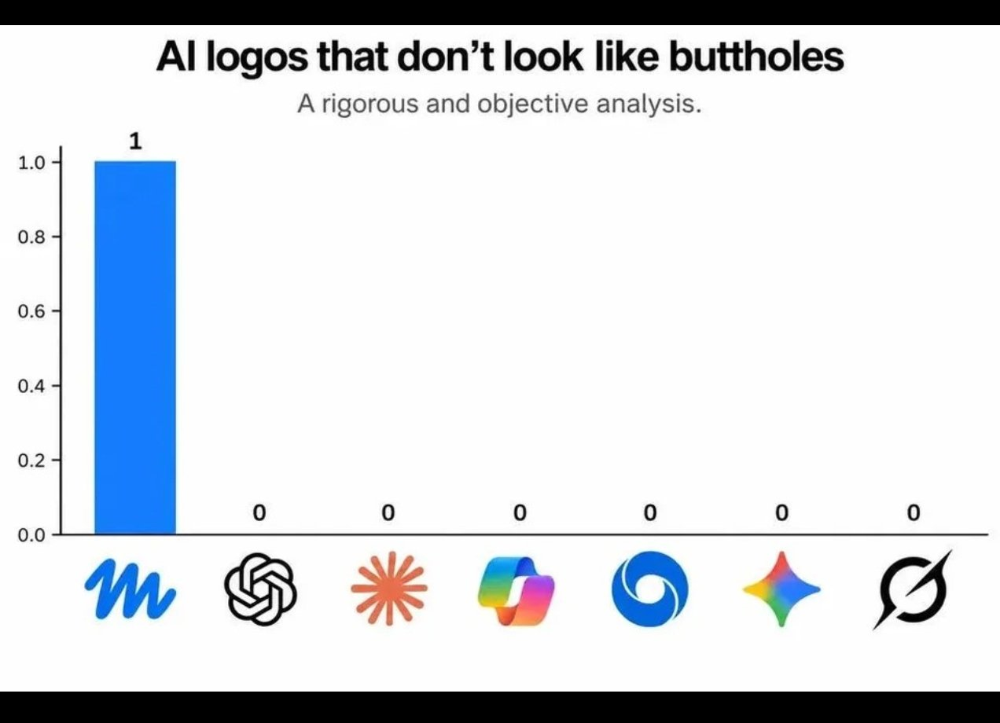

Mastering Modern AI: Prompting Tactics, CLI Tooling, Agentic Architectures, and the Pitfalls of Homogenization
A practical guide to high-leverage LLM workflows, terminal harnesses, provider nuances, and avoiding cognitive conformity.
1. The Paradigm Shift: From Chatbots to Agentic Harnesses
Most software engineers and technical operators interact with large language models (LLMs) through a web browser chat window. While convenient for quick questions, this conversational paradigm represents the lowest-leverage way to use modern frontier models.
When you type into a web UI, you face severe limitations: * Manual Context Ingestion: You must manually copy-paste snippets, losing project structure, AST relationships, and git history. * Passive Generation: The model generates markdown text, leaving you to manually paste it into your editor, run the compiler, interpret the error, and paste it back. * Ephemeral State: Web sessions lack version control, reproducible flags, and seamless integration into Unix pipelines.
To unlock true productivity, we must distinguish between three distinct tiers of AI tooling:
[ Tier 1: Chatbots ] --> Web UIs (ChatGPT, Claude.ai, Gemini Web)
│
[ Tier 2: CLI Harnesses ] --> Headless stdin/stdout tools (Aider, Claude Code, agy CLI)
│
[ Tier 3: Autonomous Agents ] --> Tool-augmented ReAct loops with persistent workspace authorityHigh-velocity engineering lives in Tiers 2 and 3.
2. Advanced Prompting Strategies and Tactical Patterns
The phrase “prompt engineering” often gets dismissed as superstitious incantation. In reality, effective prompting is simply writing unambiguous technical specifications under finite attention constraints.
A. Context Bounding and the Attention Budget
LLMs do not read text linearly; they attend across tokens using self-attention mechanisms. When you saturate a context window with thousands of lines of irrelevant boilerplate, the model’s retrieval accuracy degrades (the “needle in a haystack” phenomenon).
- Rule of Minimal Sufficient Context: Feed only the interfaces, signatures, relevant test cases, and immediate dependencies. Use tools like
ripgrepand AST parsers to slice out exact function definitions before prompting. - Systematic Role & Output Constraints: Define explicit bounds. Never say “make it good.” Say: “Refactor
process_stream()instream.pyto use asynchronous generators. Preserve all existing docstrings. Return only the unified diff.”
B. Structural XML / Markdown Framing
Frontier models (especially Anthropic’s Claude and Google’s Gemini) respond exceptionally well to structured tags. Wrapping distinct operational layers in XML tags prevents instructions from bleeding into data:
<context>
We are refactoring an asynchronous pipeline using Python 3.11 and asyncio.
Existing unit tests are located in tests/test_pipeline.py.
</context>
<rules>
- Do not introduce external dependencies outside the standard library.
- Ensure all coroutines handle asyncio.CancelledError cleanly.
- Target latency: under 5ms per event.
</rules>
<code_to_refactor>
...
</code_to_refactor>C. The “Grill-Me” (Socratic Inversion) Tactic
When facing an underspecified architectural problem, do not ask the model to generate the architecture immediately. Invert the responsibility:
“I want to design an event-driven cache invalidation pipeline for our PostgreSQL read replicas. Before writing any code or architecture documents, interview me. Ask me 3 to 5 targeted, highly critical questions about throughput, consistency guarantees, failure modes, and deployment constraints. Do not proceed until I answer.”
This forces the model to discover edge cases you overlooked, preventing hundreds of lines of hallucinated or incompatible architecture.
D. Chain-of-Thought Scratchpads
For complex algorithmic or mathematical tasks, force the model to decouple reasoning from code generation. Instruct the model to reason inside <thinking> tags before outputting any code or conclusion. This allocates computational tokens specifically to the planning phase.
3. The Power of Terminal AI: CLI Harnesses and Unix Integration
Integrating AI into the command line transforms LLMs into composable Unix utilities.
Why the CLI Dominates the Browser
- Piping and Streaming: You can pipe compiler outputs, logs, and
git diffstreams directly into an LLM harness (git diff | llm "summarize breaking API changes"). - Deterministic Workspace Access: CLI tools can inspect filesystems, run linters, execute unit tests, and review diffs without manual intervention.
- Headless & Scriptable: Terminal agents can run unattended in CI/CD pipelines, nightly cron jobs, or batch refactoring scripts.
Prominent CLI Tooling Landscape
- Aider (
aider): Excellent terminal-based pair programming tool. It builds an in-memory repository map using tree-sitter, automatically commits changes with descriptive git messages, and iterates against linter feedback. - Claude Code / Anthropic CLI: Tailored for deep codebase reasoning, tool execution, and extended architectural tasks.
- Antigravity CLI (
agy): A multi-agent command-line harness featuring custom skills, subagent orchestration, and reactive background timers. - GitHub Copilot CLI / Kimi CLI / Gemini CLI: Lightweight terminal companions designed for quick command synthesis, shell explanations, and rapid inline fixes.
4. Agentic AI and Provider Architectural Differences
Agentic AI extends beyond static question-and-answer exchanges into dynamic ReAct (Reason + Act) execution loops:
\[\text{User Objective} \longrightarrow \left[ \text{Thought} \longrightarrow \text{Tool Call} \longrightarrow \text{Environment Execution} \longrightarrow \text{Observation} \right]^* \longrightarrow \text{Final Synthesis}\]
An agent has the autonomy to read a file, discover an error, execute a shell command to verify the error, rewrite the code, re-run the test suite, and iterate until the tests pass.
Provider Strengths & Workflow Nuances
| Provider / Model Family | Primary Superpower | Best Used For | Architectural Nuances |
|---|---|---|---|
| Anthropic (Claude 3.7 Sonnet / 3.5) | Surgical code refactoring, extended thinking, instruction fidelity | Core engineering, multi-file codebase refactors, strict rule adherence | Exceptional at following complex negative constraints and architectural guardrails without drift. |
| Google (Gemini 2.5 / 3.x Flash & Pro) | 1M–2M+ token context window, native multimodality, raw speed | Ingesting entire codebases, video/audio transcripts, massive log analysis | Lightning-fast inference speeds; handles comprehensive repository dumps in a single prompt. |
| OpenAI (GPT-4o, o1, o3-mini) | Deep mathematical proofing, competitive programming logic | Complex algorithmic proofs, pure logic puzzles, system architecture | Reasoning models (o1/o3) spend internal compute exploring search trees before returning results. |
| Open-Source / Local (DeepSeek R1, Llama 3) | Sovereign computation, zero API cost, data privacy | Offline operations, sensitive corporate code, high-volume automated scrubbing | Can be fine-tuned or hosted locally on hardware via Ollama or vLLM without egress risk. |
5. Drawbacks, Pitfalls, and the Trap of AI Homogenization
Despite the immense power of agentic tools, uncritical reliance on AI introduces profound engineering and cultural risks.
The Technical Pitfalls
- Hallucination of Plausible Bullshit: Models optimize for token probability, not factual truth. An LLM will invent nonexistent library flags or deprecated API endpoints with supreme confidence.
- Sycophancy and Flattery: LLMs are trained via RLHF to be polite and agreeable. If you propose an architectural anti-pattern, the model will often validate your terrible idea rather than challenging you.
- Erosion of Mechanical Sympathy: Relying on AI to generate boilerplate without understanding the underlying POSIX calls, memory allocations, or network sockets leads to fragile, unmaintainable systems.
The Visual & Intellectual Monoculture: “The Sphincter Phenomenon”
The pitfalls of AI are not merely technical—they are cultural. When organizations rush to adopt AI without critical discernment, they fall prey to homogenization and cognitive conformity.
A hilarious and damning illustration of this phenomenon recently swept through design circles: almost every major AI startup and corporate lab ended up with nearly identical, generic, radial vortex branding:

For those interested in exploring this corporate design fiasco further, see the original exposé on Velvet Shark: AI Company Logos That Look Like Buttholes.
As the article hilariously documents, dozens of multi-million-dollar AI companies independently converged on the exact same generic swirling aperture, radial spiral, or undulating organic ring. When everyone uses the same tools, follows the same corporate focus-group instincts, and optimizes for vague “futurism,” they end up designing something indistinguishable from a biological sphincter.
The Broader Metaphor for Software Engineering
This design blunder serves as a potent cautionary tale for software developers:
- AI Boilerplate is the Logo of Code: If you prompt an LLM without strict taste, architectural principles, and personal vision, it will generate the software equivalent of a generic radial logo—mediocre, bloated, cookie-cutter code that looks vaguely modern but possesses no soul, resilience, or efficiency.
- The Loss of Distinct Perspective: In an ecosystem flooded with synthetic content and automated PRs, human taste, rigorous skepticism, and original thought are your only defensible moat.
- Praise the Outliers, Question the Crowd: Just as we must admire human excellence and reject intellectual envy, we must also reject the uncritical herd mentality that mistakes generic AI outputs for genuine mastery.
6. Practical Blueprint for an Elite Daily AI Workflow
To operate at the highest echelon of modern engineering:
- Draft the Spec First: Use human reasoning to outline what you are building. Use Socratic prompting (“Grill-me”) to expose edge cases.
- Write the Failing Test: Write an explicit, automated test that proves the feature is broken or nonexistent.
- Deploy the Agent in the Terminal: Point an agentic CLI (such as Claude Code, Aider, or Antigravity) at the workspace. Let the agent inspect the codebase, make atomic edits, and run the test suite in a closed loop until green.
- Audit Every Diff with Paranoia: Never blindly accept an agent’s git commit. Inspect the diff line-by-line. Check for performance regressions, subtle logic inversions, and unnecessary dependencies.
- Preserve Human Discernment: Treat the model as a relentless, tireless junior developer with encyclopedic memory but zero intuition. You are the lead architect.
© 2026 Igor Kan